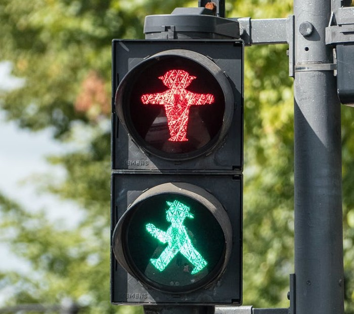
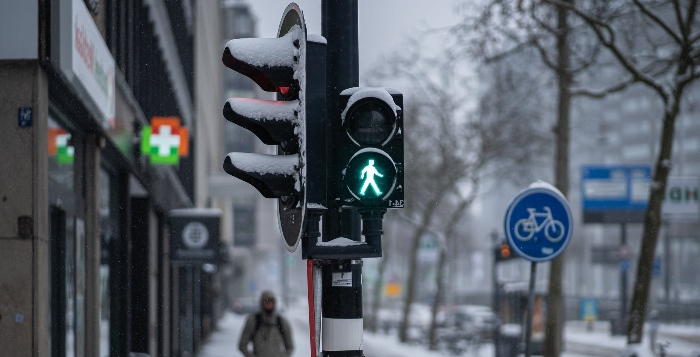

The purpose of traffic signals is to regulate and control the flow of vehicular traffic. Traffic signals communicate the intentions of the driver to the drivers around them and allow time for them to react. Traffic signals can also warn drivers of potential dangers ahead, such as a red light turning green at an intersection after the pedestrian crossing has already been activated.
Most often, traffic signals are a passive factor in our everyday lives. Like driving a car typically, people become familiar with traffic patterns, speeds, signs, and overall behaviour in the city, so they don't usually mind what they mean. So it's rare for people to look for what the purpose of traffic signs are.
There are several reasons our streets and main roads are covered with traffic signals. Some signals may serve a single purpose, while the majority of signals fulfil multiple needs.
From keeping traffic flowing to ensuring safe roads, the majority of traffic signals are designed to help:
and anyone else on the road. They may be anything from simple warning signs to complex traffic lights, however, they all serve the same purpose of keeping everyone involved on the highway safe and in their lane. The idea here is to use a traffic detection system to lessen the speed and volume of traffic through various sections of the road hassle-free.

Traffic signals and other intersections where a lot of pedestrians and cars are near each other facilitate communication of possible danger zones for both drivers and pedestrians. Traffic lights alert drivers to a certain area of a curve when lights appear, reducing the risk of crashes or pedestrian traffic. This is about managing traffic in areas where roads might bump against non-traffic areas.
Finally, traffic signals also impact the number of accidents that do happen. People are not infallible, so accidents do happen even in the safest of environments. In such cases, speed limits or controlling traffic by a series of signals can at the very least reduce the impact of accidents that do occur. In essence, this normally looks like speed limits or restructuring of lanes and major signals in more trafficked areas that are more prone to accidents.
Traffic signals have evolved significantly over the years to accommodate a considerable diversity of new purposes. As communities have expanded and traffic has woven through a larger proportion of where we live, more specific traffic signals have become necessary.
For most traffic lights, there's a fairly standardised system in place, but in some cases, more specific equipment is useful. Specialised does t necessarily mean complex, of course. A simple warning of the presence of deer is one such example. It's just a sign, but it is specialised for locations where deer are prevalent.
Looking ahead, as people rethink vehicle architecture and cities to make automation and artificial intelligence integral to their function, traffic signals will need to evolve even more. Because technology has made roads safer and cities quicker to navigate, we may see entirely new traffic signals or unexpected changes in existing ones.

Traffic signals work in tandem with civic design to increase safety. Just as traffic signals change to meet the specific requirements of roads and urban design, people's attitudes toward civic design change as well. In some cities, individuals push to make bike lanes wider and more noticeable for bicycles. In other communities, there's a set area in the centre of town that is mainly reserved for pedestrian traffic only or public transportation.
The original purpose of the traffic signals is to help ensure the safety of roadways. Try to elaborate a bit on that. Traffic lights serve to you’ll notice later on that we design and interact with our cities differently. All the laws that require crosswalks and traffic signals to operate primarily alongside one another are a manifestation of civic engineering. They put in motion a more fluid environment for us to navigate.
Traffic signals are important tools that help to ensure the safety of drivers and pedestrians. They are necessary for maintaining order on the road and preventing accidents. Drivers should obey traffic signals at all times to keep the roads safe for everyone.